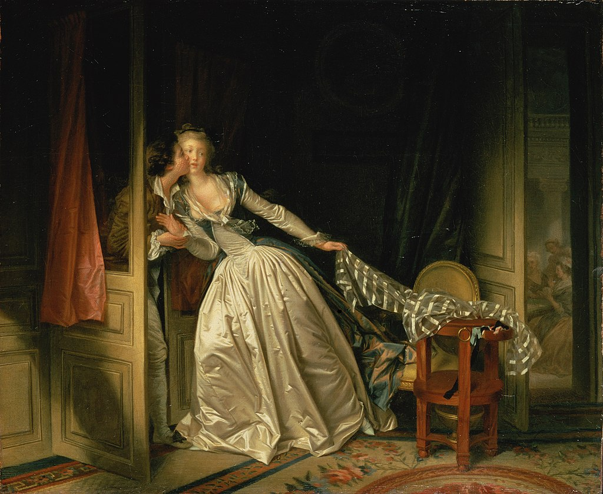

<head>
<meta charset="UTF-8" />
<meta name="keywords" content="drawing, painting" />
<meta name="description" content="drawings by Sunjy" />
<title>Sunjy</title>
<link rel="shortcut icon" type="image/x-icon" href="../../mImages/mCommon/favicon.ico" media="screen" />
<link rel="stylesheet" type="text/css" href="../../mCsses/mCommon/mCssA.css" />
<link rel="stylesheet" type="text/css" href="../../mCsses/mCommon/mCssB.css" />
<link rel="stylesheet" type="text/css" href="../../mCsses/mCommon/mCssC.css" />
<link rel="stylesheet" type="text/css" href="../../mCsses/mCommon/mCssD.css" />
<link rel="stylesheet" type="text/css" href="../../mCsses/mContent/mCssA.css" />
<link rel="stylesheet" type="text/css" href="../../mCsses/mContent/mCssB.css" />
<link rel="stylesheet" type="text/css" href="../../mCsses/mContent/mCssC.css" />
<link rel="stylesheet" type="text/css" href="../../mCsses/mContent/mCssD.css" />
</head>
<script type="text/javascript" src="../../mScripts/mContent/mContentAA.js" /></script>
<script type="text/javascript" src="../../mScripts/mContent/mContentAB.js" /></script>
<script type="text/javascript" src="../../mScripts/mContent/mContentAC.js" /></script>
<script type="text/javascript" src="../../mScripts/mContent/mContentAD.js" /></script>
<script type="text/javascript"></script> 
<script type="text/javascript">
document.write('<div class="mImgAbsolute"></div>');
/*
document.write('<p class="mFontSizeBColor" />From a white paper...</p>');
document.write('<table class="center"><tr><td>');
document.write('');
document.write('</td></tr></table>');
*/
</script>


<script type="text/javascript">
document.write('<p class="mFontSizeBColor" />The Stolen Kiss</p>');
document.write('<p class="mFontSizeSColor" />“The Stolen Kiss” by Jean-Honoré Fragonard depicts a kiss between two lovers, showing a young lady in a cream-colored silk gown who has left the group women in the next room for a secret meeting with a young man.<br><br>Fragonard’s painting displays the kind of eroticism and romantic folly that was popular before the French Revolution among French aristocrats.<br><br>This scene of voyeurism depicts the stolen kiss in lavish surroundings, containing luxurious details of textures, silks, and lace, like the rug with flower pattern, silk draperies, her shawl on the chair, the elegantly clad ladies that are visible through the open door.<br><br>The dominant French culture was highly influential on Fragonard’s themes, which were mostly erotic, secretive romance or love scenes, painted for Louis XV’s pleasure-loving court’s enjoyment.<br><br>However, Fragonard’s skills are evident in the diagonal composition framed by the two doors.<br><br>The diagonal axis is composed on the one end, by the lady’s leaning figure and her extended arm holding on to the shawl that is diagonally draped over the table, at the other end.<br><br>Fragonard offers us an array of compositional contrasts between colors and shadows and the complex spatial intersections.<br><br>The style of the painting was characteristic of the French Rococo period and was favored by the wealthy art patrons of the 1780s.<br><br>Rococo<br><br>The Rococo style began in France in the first part of the 18th century in the reign of Louis XV as a reaction against the more formal and geometric form.<br><br>It soon spread to other parts of Europe, mainly northern Italy, Bavaria, Austria, other parts of Germany, and Russia.<br><br>It also came to influence the other arts, particularly sculpture, furniture, silverware and glassware, painting, music, and theatre.<br></p>');
document.write('<table class="center" /><tr><td>');
document.write('<br>Fragonard’s painting displays the kind of eroticism and romantic folly that was popular before the French Revolution among French aristocrats.<br><br>This scene of voyeurism depicts the stolen kiss in lavish surroundings, containing luxurious details of textures, silks, and lace, like the rug with flower pattern, silk draperies, her shawl on the chair, the elegantly clad ladies that are visible through the open door.<br><br>The dominant French culture was highly influential on Fragonard’s themes, which were mostly erotic, secretive romance or love scenes, painted for Louis XV’s pleasure-loving court’s enjoyment.<br><br>However, Fragonard’s skills are evident in the diagonal composition framed by the two doors.<br><br>The diagonal axis is composed on the one end, by the lady’s leaning figure and her extended arm holding on to the shawl that is diagonally draped over the table, at the other end.<br><br>Fragonard offers us an array of compositional contrasts between colors and shadows and the complex spatial intersections.<br><br>The style of the painting was characteristic of the French Rococo period and was favored by the wealthy art patrons of the 1780s.<br><br>Rococo<br><br>The Rococo style began in France in the first part of the 18th century in the reign of Louis XV as a reaction against the more formal and geometric form.<br><br>It soon spread to other parts of Europe, mainly northern Italy, Bavaria, Austria, other parts of Germany, and Russia.<br><br>It also came to influence the other arts, particularly sculpture, furniture, silverware and glassware, painting, music, and theatre.<br>" />');
document.write('</td></tr></table>');
</script>


